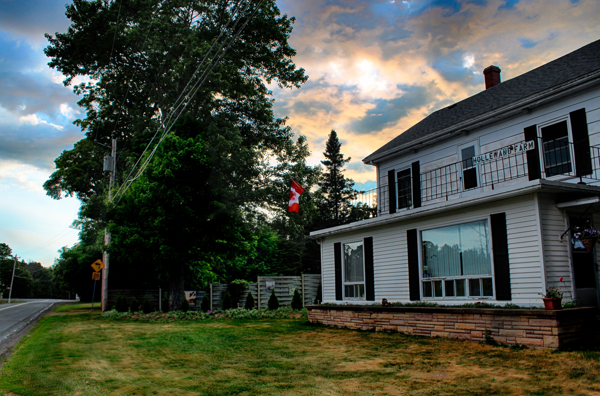
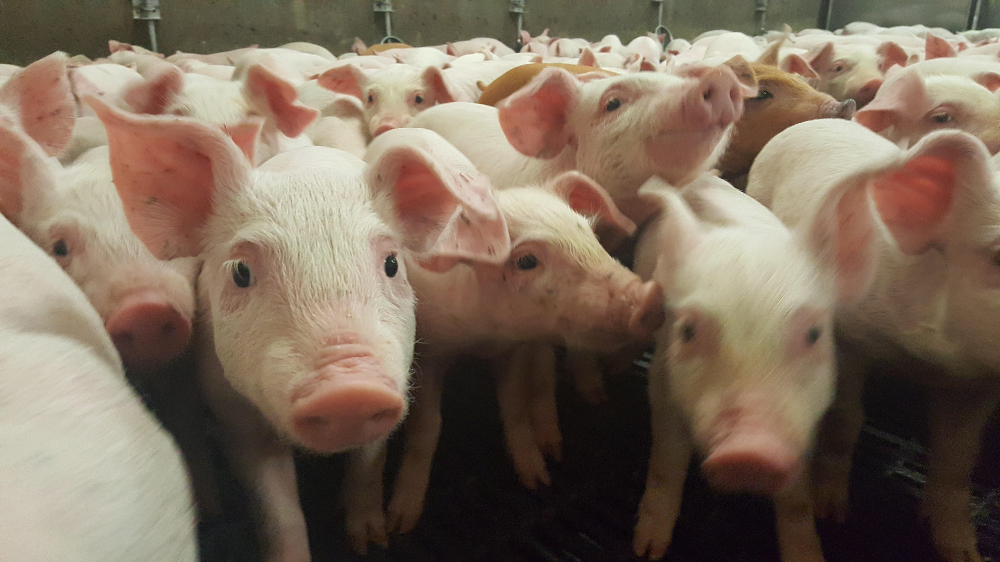

Hollewand Pig Farm


INFORMATION
Hollewand Farm is a privately held company in Canning, NS. This farm has been owned and opperated by Rene and Jose van Vilsteren since 1988. The couple moved here from Holland to start farming and to start a new life in a new country.
Since moving they have had four lovely daughters,
- Lydia (25)
- Denise (23)
- Leanne (21)
- Claudia (19)
Click Here
FUN FACTS
- Newborn piglets learn to run to their mothers’ voices, and can recognize their own names by the time they’re 2 weeks old. Sows have even been known to sing to their young whilst nursing!
- Pigs have hardly any sweat glands, and one of the best ways for them to cool down is to wallow in all of that glorious mud
- A pig's squeal can be as loud as 115 decibels – that’s 3 decibels higher than the sound of a supersonic airliner.
- They may be indiscriminate eaters, but pigs are also highly intelligent and incredibly social animals. When kept in a group they will snuggle close to one another, and prefer to sleep nose-to-nose. Studies have also shown that, much like humans, they dream
Where is the farm located?
The farm is located in a little town in Nova Scotia, called Canning.Canning is a small village of around 850 people near the base of the North Mountain.
Birds eye view
